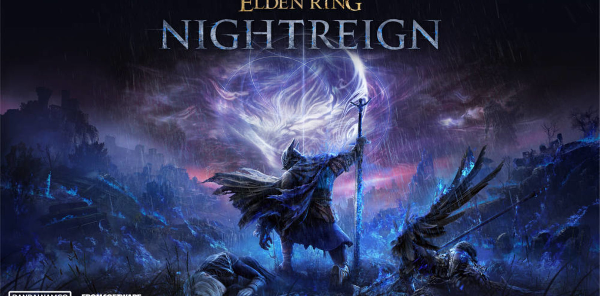
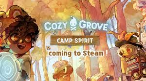
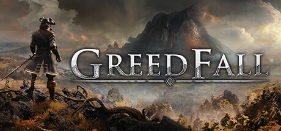

Hoy
Nueva actualización de Fortnite sorprende a los jugadores
Epic presenta nuevos modos, recompensas y contenido especial.
Mantente al día con los últimos acontecimientos en el mundo gamer: noticias, lanzamientos y sorpresas que no te puedes perder.

Rockstar Games ha confirmado nuevos avances en el desarrollo de Grand Theft Auto VI, uno de los videojuegos más esperados de la historia. Tras el éxito del primer tráiler, la comunidad continúa analizando cada detalle mientras crece la expectativa por su lanzamiento. Se espera que el título incluya un mundo más dinámico, mejoras gráficas importantes y nuevas mecánicas de juego que marcarían un antes y un después en la industria.
Epic presenta nuevos modos, recompensas y contenido especial.

La comunidad ya especula sobre jefes inéditos y nuevas zonas.

Capcom adelanta eventos y novedades para los fans de la saga.
La plataforma alcanzó una cifra histórica de jugadores simultáneos.
El esperado título vuelve a generar expectativa entre los jugadores.
Se esperan anuncios, contenido especial y eventos conmemorativos.
La próxima actualización ampliará la creatividad de los jugadores.

Lanzamiento estimado: Próximamente
Lanzamiento estimado: Este año

Lanzamiento estimado: Próximamente